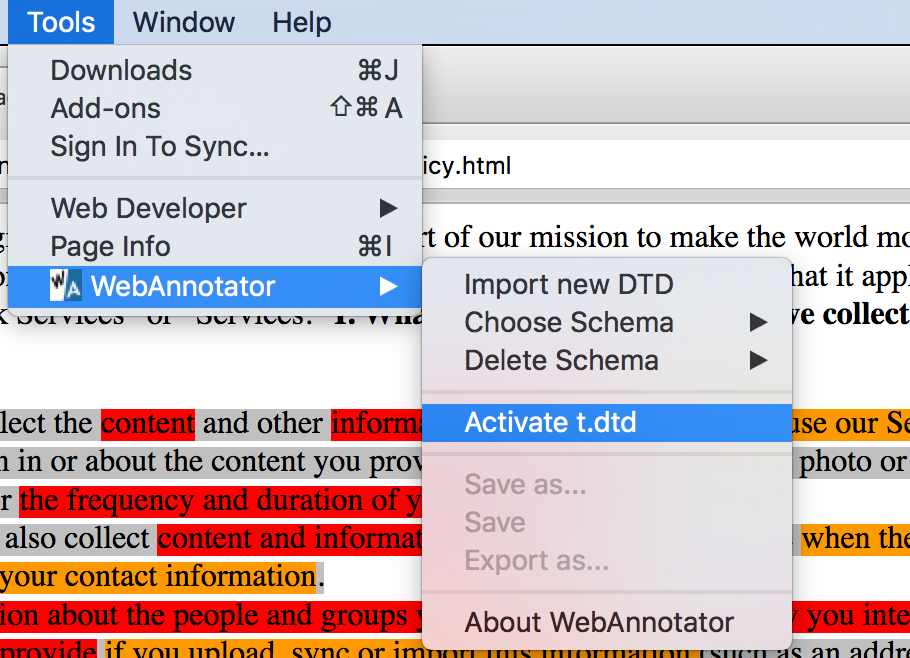
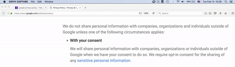

Contextual Integrity Annotation Project
The Contextual Integrity Project aims to use the CI framework to annotate privacy policies and regulation.
Learn more
Setup
For annotations we're using a
Mozilla WebAnnotator plugin. You need to install the plugin to be able to annotate and view/edit previousely made annotations.
After you've installed the plugin, you will need to import a
document type definition (DTD) schema to load the CI parameters types:
sender, recipient, subject, attribute, transmission principle
How to annotate?
Once you selected a document for annotation. You need to activate the WebAnotation plugin.
Note, you cannot annotate two documents in parallel. Each document requires a separate activation.
Activation

To activate the plugin choose activate
from the WebAnnotator menu.
Annotation

Submitting your annotation
Once you completed annoated the document, save it using the WebAnnoation Save As option and perform a pull request to our repository or emailed to us.